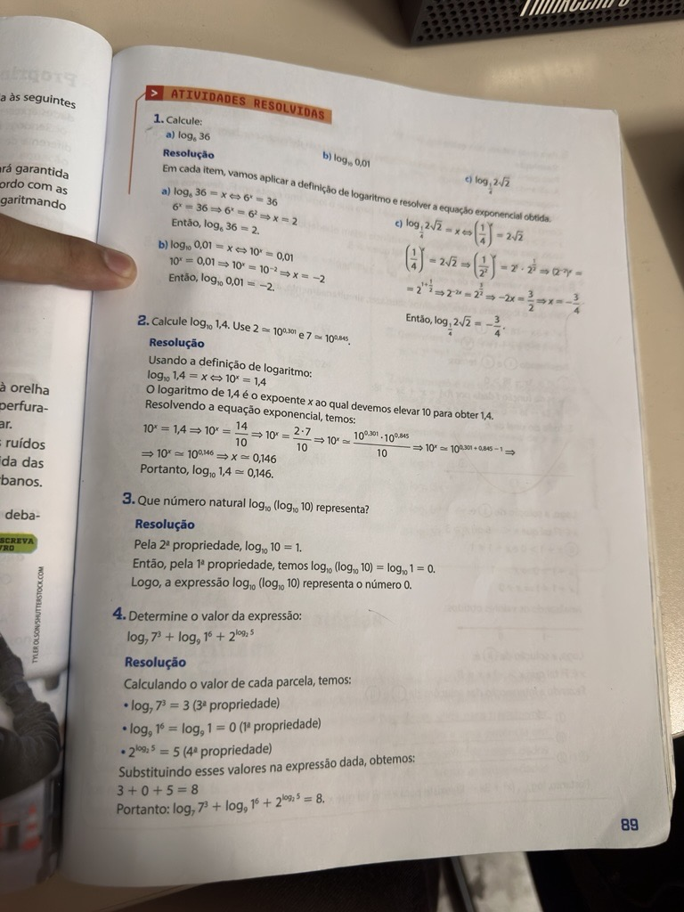
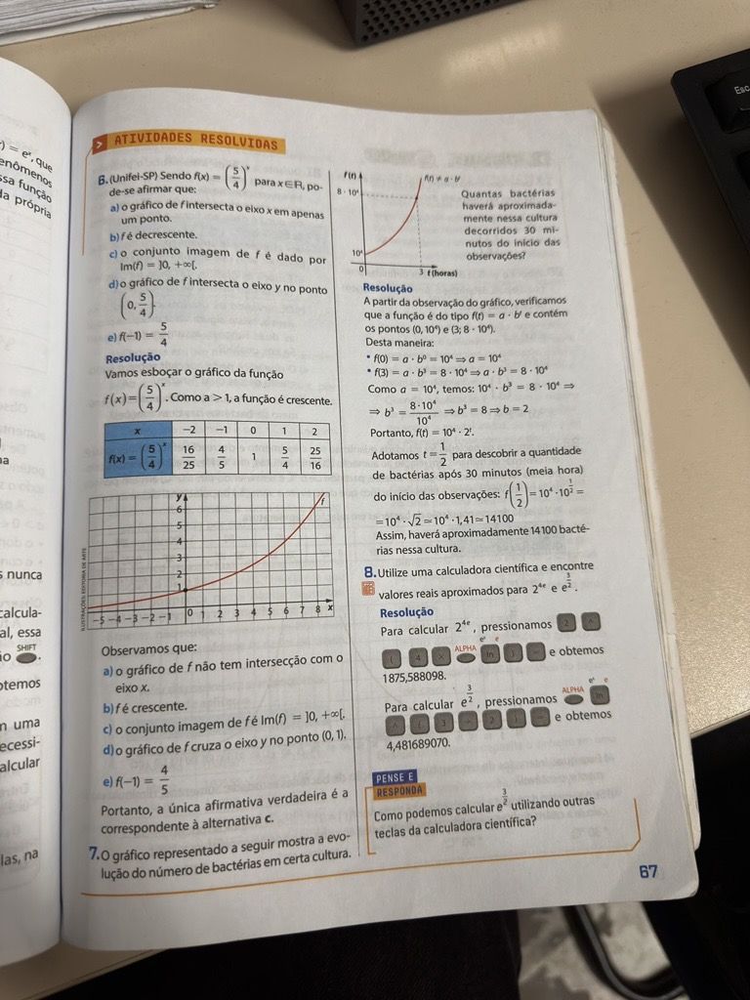
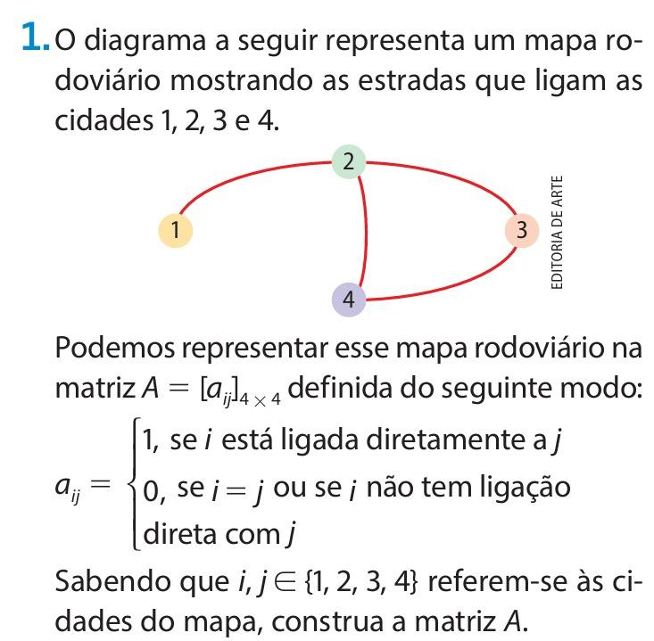
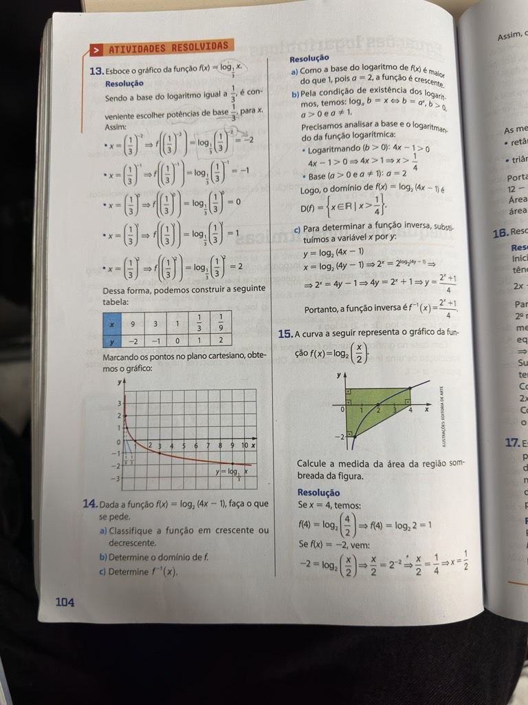
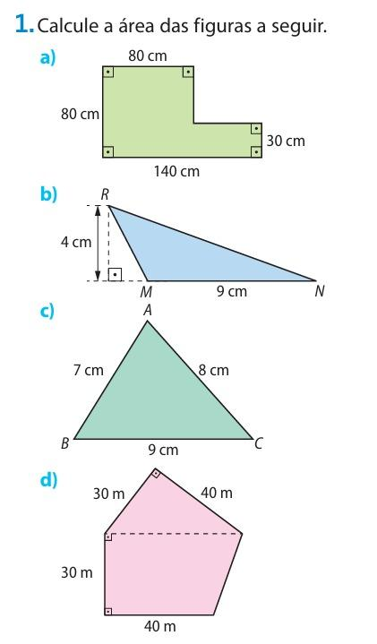

Portfólio de Matemática
Uma jornada prática e conceitual através dos fundamentos da Álgebra, Funções Transcendentais, Estruturas Matriciais e Geometria Euclidiana Plana.
"A Matemática é o alfabeto com o qual Deus escreveu o universo." — Galileo Galilei
Dashboard Analítico
5
Grandes Conteúdos
72
Exercícios Identificados
5
Mapas Mentais Integrados
14
Páginas Analisadas
Linha do Tempo de Aprendizado
Potenciação e Radiciação
Domínio das propriedades aritméticas fundamentais, manipulação de bases e simplificação de radicais compostos.
Função Exponencial
Análise de crescimento e decaimento acelerado, modelagem de cenários reais como biologia bacteriana.
Logaritmos e suas Funções
Inversão de operações exponenciais, estudo das leis operatórias e representações em planos gráficos.
Matrizes e Operações
Organização de dados em tabelas bidimensionais, aplicação de operações de adição, produto e cálculo de determinantes.
Geometria Plana Euclidiana
Cálculo de áreas, decomposição geométrica de polígonos complexos e integração com coordenadas.
Fundamentos Matemáticos do Bimestre
Conceito Central: A potenciação estuda a multiplicação sucessiva de um fator idêntico por si mesmo, enquanto a radiciação opera na descoberta da base que originou tal potência. Ambas fundamentam a simplificação de termos em equações complexas.
Pontos-Chave:
- Expoente Fracionário: Propriedade que converte radicais em expoentes racionais: $\sqrt[n]{a^m} = a^{\frac{m}{n}}$.
- Multiplicação de Bases Iguais: Conserva-se a base e somam-se os expoentes.
Conceito Central: Modelos em que a incógnita matemática se encontra no expoente de uma base constante e positiva ($a > 0$ e $a \neq 1$). Mapeia curvas de crescimento ou decrescimento acentuado.
Pontos-Chave:
- Crescimento Exponencial: Ocorre sempre que a base for maior do que um ($a > 1$).
- Redução Assintótica: Quando a base assume valores entre zero e um ($0 < a < 1$).
Conceito Central: Operação matemática inversa à exponencial. O logaritmo de um número corresponde ao expoente ao qual devemos elevar uma base fixa para obter esse mesmo número.
Pontos-Chave:
- Condições Críticas: O logaritmando deve ser estritamente positivo ($b > 0$).
- Propriedade do Produto: Transforma uma multiplicação interna em uma soma de parcelas logarítmicas.
Conceito Central: Uma matriz é uma tabela organizada em linhas e colunas utilizada para agrupar dados numéricos e resolver sistemas lineares estruturados. O determinante é um valor numérico associado a matrizes quadradas.
Pontos-Chave:
- Multiplicação: Operação realizada multiplicando os elementos da linha da primeira matriz pelos elementos da coluna da segunda.
- Matriz Identidade ($I_n$): Diagonal principal preenchida por 1, com o resto dos elementos zerados.
Conceito Central: Estudo da extensão superficial ocupada por figuras bidimensionais fechadas no plano. Essencial para problemas de engenharia e desenho de arquitetura.
Pontos-Chave:
- Base e Altura: Parâmetros fundamentais ortogonais para a mensuração de polígonos.
- Decomposição: Quebra de figuras geométricas irregulares em triângulos de cálculo simplificado.
Análise de Exercícios Encontrados
Cálculo de Potência com Expoente Negativo Fracionário
Enunciado: Calcule o valor numérico simplificado para a seguinte expressão algébrica exponencial: $\left(\frac{1}{243}\right)^{-\frac{2}{5}}$
- Fatora-se a base numérica do denominador: $243 = 3^5$. Reescrevendo a fração como potência invertida, temos: $(3^{-5})^{-\frac{2}{5}}$.
- Aplica-se a propriedade de potência de potência multiplicando diretamente os dois expoentes: $-5 \cdot \left(-\frac{2}{5}\right) = \frac{10}{5} = 2$.
- Desenvolve-se a potência inteira remanescente: $3^2 = 9$.
Modelagem de Crescimento de População Bacteriana
Enunciado: Uma população bacteriana simulada cresce obedecendo à lei matemática $f(t) = a \cdot b^t$, onde $t$ representa o tempo computado em horas. Sabendo que no instante inicial ($t = 0$) a população conta com $10^4$ elementos e que em $t = 3$ ela atinge $8 \cdot 10^4$ indivíduos, encontre o volume total dessa colônia após transcorridos 30 minutos ($t = 0,5$).
- Substitui-se os dados iniciais para descobrir a constante $a$: $f(0) = a \cdot b^0 = 10^4 \implies a = 10^4$.
- Utiliza-se o segundo marco temporal dado para isolar a base de crescimento $b$: $f(3) = 10^4 \cdot b^3 = 8 \cdot 10^4 \implies b^3 = 8 \implies b = \sqrt[3]{8} = 2$. A função montada é $f(t) = 10^4 \cdot 2^t$.
- Substitui-se o intervalo de 30 minutos adaptado para a escala em horas ($t = \frac{1}{2}$): $f(\frac{1}{2}) = 10^4 \cdot 2^{\frac{1}{2}} = 10^4 \cdot \sqrt{2}$. Adotando $\sqrt{2} \approx 1,41$, obtém-se $10^4 \cdot 1,41 = 14.100$.
Área Delimitada por Função Logarítmica no Plano
Enunciado: Considere a função logarítmica representada por $f(x) = \log_2 \left(\frac{x}{2}\right)$. Avalie matematicamente os limites de intersecção da curva ao longo do eixo das abscissas e calcule a projeção linear para o ponto onde $x = 4$.
- Encontra-se a raiz da função mapeando onde o gráfico corta o eixo $x$ ($f(x) = 0$): $\log_2 \left(\frac{x}{2}\right) = 0 \implies \frac{x}{2} = 2^0 \implies \frac{x}{2} = 1 \implies x = 2$.
- Calcula-se o ponto extremo superior injetando a abscissa informada: $f(4) = \log_2 \left(\frac{4}{2}\right) = \log_2(2) = 1$.
- Os limites do intervalo de crescimento da curva no primeiro quadrante dão-se, portanto, entre as coordenadas cartesianas de base $(2,0)$ e o ponto máximo atingido em $(4,1)$.
Multiplicação e Determinante Matricial
Enunciado: Dadas as matrizes $A = \begin{pmatrix} 1 & 2 \\ 3 & 0 \end{pmatrix}$ e $B = \begin{pmatrix} 2 & 1 \\ -1 & 4 \end{pmatrix}$, calcule o determinante da matriz resultante do produto $A \cdot B$.
- Multiplicam-se as matrizes linha por coluna: $C = A \cdot B = \begin{pmatrix} (1\cdot2) + (2\cdot-1) & (1\cdot1) + (2\cdot4) \\ (3\cdot2) + (0\cdot-1) & (3\cdot1) + (0\cdot4) \end{pmatrix} = \begin{pmatrix} 0 & 9 \\ 6 & 3 \end{pmatrix}$.
- Aplica-se a regra do determinante para matrizes $2 \times 2$: $\det(C) = (0 \cdot 3) - (9 \cdot 6)$.
- Subtrai-se os produtos obtidos: $\det(C) = 0 - 54 = -54$.
Cálculo de Área de Triângulo no Plano Cartesiano
Enunciado: Determine a área superficial interna ocupada por um triângulo plano cujos vértices estruturais estão posicionados nas seguintes coordenadas cartesianas: $A(2, 2)$, $B(10, 2)$ e $C(4, 6)$.
- Como os pontos $A$ e $B$ compartilham a mesma ordenada ($y=2$), o segmento $AB$ forma uma base horizontal perfeita. Mede-se seu comprimento subtraindo as abscissas: $b = x_B - x_A = 10 - 2 = 8\text{ unidades}$.
- A altura ($h$) corresponde à distância vertical entre o vértice mais alto ($C$) e a linha horizontal da base: $h = y_C - y_A = 6 - 2 = 4\text{ unidades}$.
- Aplica-se a equação de área triangular euclidiana clássica: $A = \frac{b \cdot h}{2} = \frac{8 \cdot 4}{2} = \frac{32}{2} = 16$.
Banco de Questões Resolvidas
Análise da Função Exponencial $f(x) = (5/4)^x$
Enunciado: Sendo $f(x) = (5/4)^x$ para $x \in \mathbb{R}$, analise as propriedades da função para determinar a afirmação correta sobre o seu comportamento gráfico e conjunto imagem.
- Observe a base da função exponencial: $a = 5/4$. Como $5/4 > 1$, a função é estritamente crescente.
- As funções exponenciais elementares da forma $f(x) = a^x$ com $a > 0$ e $a \neq 1$ possuem como conjunto imagem apenas os valores estritamente maiores que zero.
- A curva se aproxima do eixo $x$ sem nunca tocá-lo (assíntota horizontal em $y = 0$), logo $Im(f) = ]0, +\infty[.$
Crescimento de Cultura de Bactérias
Enunciado: O gráfico mostra a evolução do número de bactérias em certa cultura. Quantas bactérias haverá aproximadamente decorridos 30 minutos do início?
- Modelamos a lei de crescimento a partir do gráfico: $N(t) = N_0 \cdot b^t$. Para $t = 0$, $N(0) = 10^4$, portanto $N_0 = 10^4$.
- Do gráfico, quando $t = 3$ horas, $N(3) = 8 \cdot 10^4$. Substituindo: $10^4 \cdot b^3 = 8 \cdot 10^4 \implies b^3 = 8 \implies b = 2$. A equação é $N(t) = 10^4 \cdot 2^t$.
- O tempo pedido é 30 minutos, o que equivale a $t = 0,5$ horas (ou $1/2$).
- Calculamos $N(0,5) = 10^4 \cdot 2^{1/2} = 10^4 \cdot \sqrt{2}$. Adotando $\sqrt{2} \approx 1,414$, temos $10.000 \cdot 1,414 = 14.140$.
Cálculos Exponenciais Aproximados
Enunciado: Utilize regras de exponenciação para determinar os valores reais aproximados para as expressões: a) $2^{4e}$ e b) $e^{3/2}$.
- Para o item (a), substituímos o valor irracional da base neperiana $e \approx 2,71828$ no expoente: $4 \cdot 2,71828 \approx 10,8731$.
- Calculamos a potência resultante: $2^{10,8731} \approx 1875,59$.
- Para o item (b), transformamos o expoente fracionário em radical: $e^{3/2} = \sqrt{e^3}$.
- Aproximando o valor sob a raiz: $\sqrt{2,71828^3} = \sqrt{20,0855} \approx 4,48$.
Aplicação da Definição de Logaritmos
Enunciado: Calcule os valores utilizando a definição fundamental $\log_a(b) = x \iff a^x = b$: a) $\log_6 36$, b) $\log_{10} 0,01$, c) $\log_{1/4} 2\sqrt{2}$.
- Item a: $\log_6 36 = x \iff 6^x = 36$. Como $36 = 6^2$, temos $x = 2$.
- Item b: $\log_{10} 0,01 = x \iff 10^x = 0,01$. Como $0,01 = 1/100 = 10^{-2}$, temos $x = -2$.
- Item c: $\log_{1/4} 2\sqrt{2} = x \iff (1/4)^x = 2\sqrt{2} \implies (2^{-2})^x = 2^1 \cdot 2^{1/2} \implies 2^{-2x} = 2^{3/2} \implies -2x = 3/2 \implies x = -3/4$.
Uso de Dados Exponenciais para Logaritmos
Enunciado: Calcule o valor de $\log_{10} 1,4$ sabendo que $2 = 10^{0,301}$ e $7 = 10^{0,845}$.
- Escrevemos o logaritmando na forma de fração: $1,4 = 14 / 10$.
- Substituindo na expressão: $\log_{10}(14/10) = \log_{10}(2 \cdot 7) - \log_{10}(10)$.
- Aplicando as propriedades operatórias de multiplicação e divisão: $\log_{10}(2) + \log_{10}(7) - \log_{10}(10)$.
- Por definição, se $2 = 10^{0,301}$, então $\log_{10}(2) = 0,301$. Se $7 = 10^{0,845}$, então $\log_{10}(7) = 0,845$.
- Efetuamos a soma aritmética final: $0,301 + 0,845 - 1 = 0,146$.
Logaritmo de Logaritmo
Enunciado: Determine qual número natural representa a expressão composta $\log_{10} (\log_{10} 10)$.
- Resolvemos primeiro o logaritmo que se encontra no parêntese interno: $\log_{10} 10$.
- Como a base e o logaritmando são iguais, $\log_{10} 10 = 1$.
- Substituímos o resultado na parte externa da expressão: $\log_{10} (1)$.
- O logaritmo do número 1 em qualquer base permitida é igual a 0.
Simplificação de Expressões com Propriedades
Enunciado: Calcule o valor numérico real da expressão: $\log_7 7^3 + \log_9 1^6 + 2^{(\log_2 5)}$.
- Análise do primeiro termo: $\log_7 7^3 = 3$ (propriedade do expoente do logaritmando).
- Análise do segundo termo: Como $1^6 = 1$, a expressão vira $\log_9 1$, cujo valor é igual a 0.
- Análise do terceiro termo: Utilizando a propriedade da identidade exponencial $a^{(\log_a b)} = b$, temos $2^{(\log_2 5)} = 5$.
- Somando os resultados parciais obtidos: $3 + 0 + 5 = 8$.
Análise Gráfica de $f(x) = \log_{1/3} x$
Enunciado: Determine os pontos chaves e descreva o comportamento para o esboço gráfico da função $f(x) = \log_{1/3} x$.
- Identifique a base do logaritmo: $b = 1/3$. Como $0 < 1/3 < 1$, a função é estritamente decrescente.
- Calculamos pontos notáveis para o mapeamento das coordenadas no plano cartesiano:
- Para $x = 1 \implies y = \log_{1/3} 1 = 0$, gerando o ponto $(1, 0)$.
- Para $x = 3 \implies y = \log_{1/3} 3 = -1$, gerando o ponto $(3, -1)$.
- Para $x = 1/3 \implies y = \log_{1/3} (1/3) = 1$, gerando o ponto $(1/3, 1)$.
Domínio e Inversa da Função $\log_2 (4x - 1)$
Enunciado: Dada a função $f(x) = \log_2 (4x - 1)$, determine: a) a classificação de crescimento, b) o domínio de existência, c) a expressão algébrica da função inversa.
- Item a: A base é 2. Como $2 > 1$, a função é estritamente crescente.
- Item b: Pela condição de existência de logaritmos, o logaritmando precisa ser positivo: $4x - 1 > 0 \implies 4x > 1 \implies x > 1/4$.
- Item c: Para achar a inversa, trocamos $x$ por $y$ e isolamos a nova variável: $x = \log_2 (4y - 1) \implies 2^x = 4y - 1 \implies 4y = 2^x + 1 \implies y = (2^x + 1)/4$.
Área de Região Retangular no Gráfico
Enunciado: A curva do gráfico representa a função $f(x) = \log_2 (x/2)$. Encontre a medida da área do retângulo hachurado.
- Encontramos a base do retângulo calculando a distância entre as coordenadas $x$ informadas: $Base = 4 - 1 = 3$.
- Determinamos a altura obtendo o valor da função no ponto limite superior $x = 4$: $f(4) = \log_2 (4/2) = \log_2 2 = 1$.
- O limite inferior do retângulo está alinhado no eixo horizontal $y = 0$, logo a $Altura = 1 - 0 = 1$.
- Calculamos a área multiplicando os valores da base e da altura: $Área = Base \cdot Altura = 3 \cdot 1 = 3$.
Matriz de Adjacência de Rede Viária
Enunciado: Construa a matriz de conectividade $A = [a_{ij}]_{4 \times 4}$ para as quatro cidades do mapa rodoviário, adotando 1 se há ligação direta e 0 caso contrário.
- Linha 1 (Cidade 1): possui ligação direta apenas para a cidade 2. Linha = $[0, 1, 0, 0]$.
- Linha 2 (Cidade 2): possui conexões diretas com as cidades 1, 3 e 4. Linha = $[1, 0, 1, 1]$.
- Linha 3 (Cidade 3): possui conexões diretas com as cidades 2 e 4. Linha = $[0, 1, 0, 1]$.
- Linha 4 (Cidade 4): possui conexões diretas com as cidades 2 e 3. Linha = $[0, 1, 1, 0]$.
Matriz $A = \begin{pmatrix} 0 & 1 & 0 & 0 \\ 1 & 0 & 1 & 1 \\ 0 & 1 & 0 & 1 \\ 0 & 1 & 1 & 0 \end{pmatrix}$
Área do Polígono em L
Enunciado: Calcule a área total da figura em formato de L com medidas externas de 140 cm, 80 cm e recortes internos.
- Dividimos o L verticalmente em duas partes retangulares simples.
- Parte 1 (Retângulo vertical esquerdo): base de 80 cm e altura de 80 cm. $Área = 80 \cdot 80 = 6.400\text{ cm}^2$.
- Parte 2 (Retângulo horizontal direito): base restante de $140\text{ cm} - 80\text{ cm} = 60\text{ cm}$. A altura informada é de 30 cm. $Área = 60 \cdot 30 = 1.800\text{ cm}^2$.
- Somamos as áreas parciais: $6.400 + 1.800 = 8.200\text{ cm}^2$.
Área do Triângulo Escaleno
Enunciado: Calcule a área do triângulo obtusângulo que possui base de 9 cm e uma projeção de altura externa medindo 4 cm.
- A fórmula da área de qualquer triângulo é dada pelo produto da base pela altura dividido por dois.
- A base do triângulo mede 9 cm e a altura perpendicular relativa a essa base mede 4 cm.
- Aplicando os valores na fórmula: $Área = \frac{9 \cdot 4}{2} = \frac{36}{2} = 18\text{ cm}^2$.
Área de Triângulo por Semiperímetro
Enunciado: Calcule a área do triângulo de lados medindo a = 7 cm, b = 8 cm e c = 9 cm.
- Utilizamos a Fórmula de Heron. Primeiro calculamos o semiperímetro: $p = \frac{7 + 8 + 9}{2} = 12\text{ cm}$.
- Escrevemos o termo do produto sob o radical: $Área = \sqrt{12 \cdot (12-7) \cdot (12-8) \cdot (12-9)}$.
- Simplificando os termos: $Área = \sqrt{12 \cdot 5 \cdot 4 \cdot 3} = \sqrt{720}$.
- Fatorando o radicando para extrair a raiz simplificada: $\sqrt{720} = \sqrt{144 \cdot 5} = 12\sqrt{5}\text{ cm}^2$.
Área da Composição Retângulo-Triângulo
Enunciado: Determine a área da figura irregular composta por uma base retangular de 40 m por 30 m e topo triangular.
- Dividimos o cálculo nas duas formas planas explícitas.
- Área da base retangular inferior: $Área = base \cdot altura = 40 \cdot 30 = 1.200\text{ m}^2$.
- Área do triângulo retângulo superior: Cateto base mede 40 m e cateto altura mede 30 m. $Área = \frac{40 \cdot 30}{2} = 600\text{ m}^2$.
- Somamos as duas superfícies para o resultado consolidado: $1.200 + 600 = 1.800\text{ m}^2$.
Mapas Mentais Incorporados

Potenciação e Radiciação
Estrutura visual das propriedades de unificação de bases exponenciais e regras de frações de índice.

Função Exponencial
Visão geral de assíntotas horizontais, análise do coeficiente de base e comportamentos gráficos.

Teoria de Logaritmos
Exposição clara das leis de transformação de produto em soma e mudança de bases operatórias.

Matrizes e Operações
Representação visual de adição, subtração, multiplicação matricial e propriedades de matriz inversa.

Geometria Plana Euclidiana
Compilado com as fórmulas fundamentais para áreas poligonais, circulares e decompostas.
Galeria de Atividades e Registros





Considerações Acadêmicas Finais
Durante este bimestre letivo, analisamos e compreendemos diversos conteúdos matemáticos que contribuíram significativamente para o desenvolvimento do nosso raciocínio lógico. A jornada teórica que se estendeu desde o comportamento das funções transcendentais até a organização algorítmica de dados estruturados em Matrizes provou a interconexão completa da matéria.
Elaborado e validado por:
Luigy S., Cauã M., Rafael M.